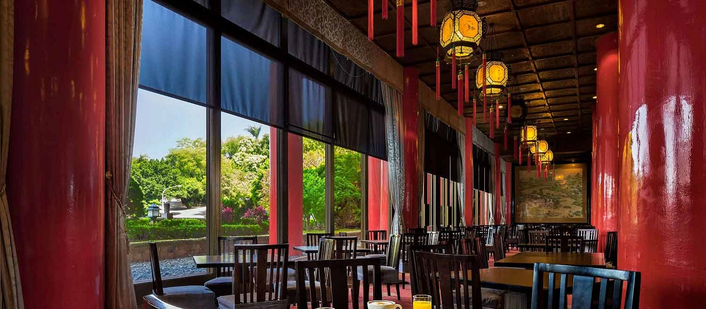
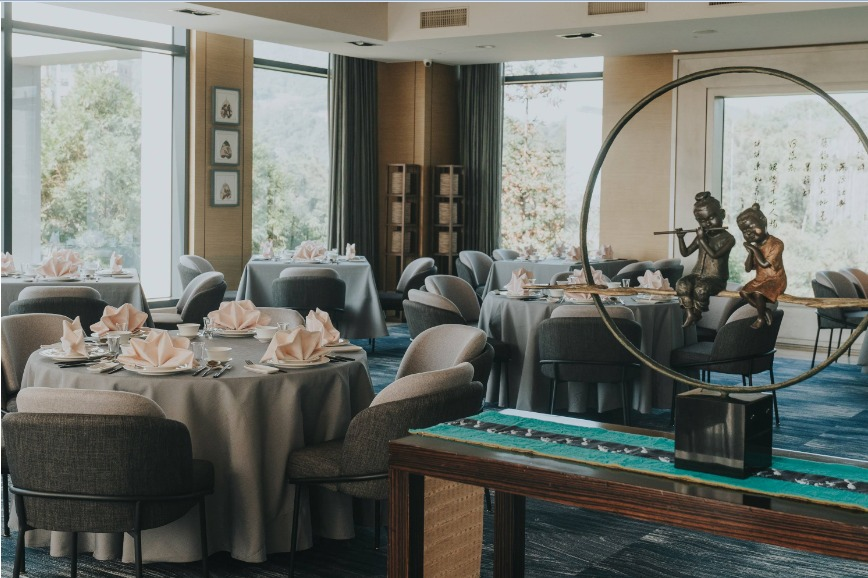
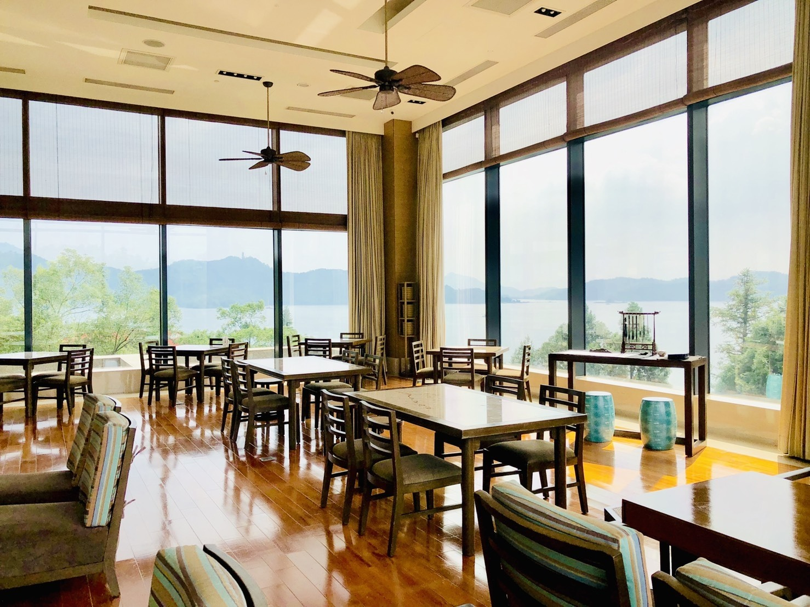
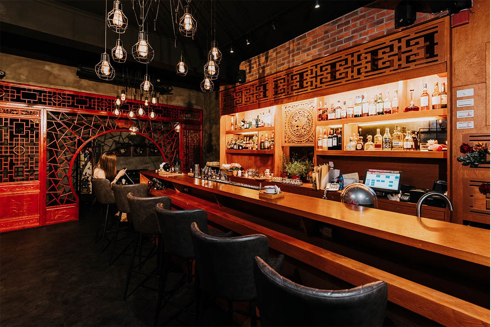

最新消息
房型介紹
餐飲服務
休閒設施
線上訂房

餐飲服務


Back
御膳坊
270度三面環山的怡然景緻，白日雲天圍繞、夜晚時星月相伴。
賦予東方哲思與風韻美感，增添安閒雅緻的雍容大度。
午餐時間 : 12:00-14:00 （最後點餐時間13:30）
晚餐時間 : 17:30-21:00 （最後點餐時間20:30）
※ 全時段僅提供入住房客預訂使用
訂位專線 : 03-8888-8888
服務時間 : 12:00-21:00
飯店營運內容與相關決定將視中央流行疫情指揮中心的發佈進行更新
請關注最新消息『飯店設施與服務調整』
Next

Back
驛站茶坊
三面環湖的驛站茶坊，是觀賞四季變化之美的最佳地點。
午餐時間 : 12:00-14:00
下午茶供應時段 : 14:00 ~ 17:00
雙人套餐 : NT$1,580+10%
單人套餐 : NT$880+10%
訂位專線 : 03-8888-8888
服務時間 : 12:00-17:00
飯店營運內容與相關決定將視中央流行疫情指揮中心的發佈進行更新
請關注最新消息『飯店設施與服務調整』
Next
Back
驛站酒坊
以西式調酒為基底融入中式文化，每杯皆是匠心獨具。
營業時間 : 19:00~01:00
價格：每人低消為單點一杯飲品。
※ 需提前一天預約
※ 特殊節慶、假日之餐價以官網最新消息公告為主
訂位專線 : 03-8888-8888
服務時間 : 19:00-00:00
飯店營運內容與相關決定將視中央流行疫情指揮中心的發佈進行更新
請關注最新消息『飯店設施與服務調整』